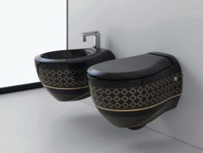
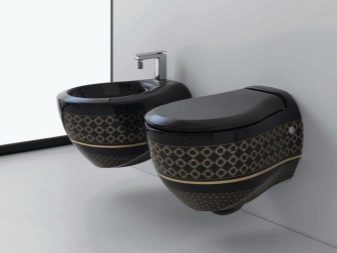

11 geriausių tualeto dubenys - Reitingas 2019
2020.10.29 08:29
Meniu Pasirinkimas Reitingai Apie projektą Jūs esate čia: Reitingai
11 geriausių tualeto dubenėlių
Renkantis tualetą, dauguma žmonių tiesiog pirko pirmuosius daiktus parduotuvėje, o ne pirmiausia iš pirmo žvilgsnio patiekdami į primityvų, vandentiekio. Poveikis šio dalyko utilitariniam tikslui. Siūlome pažvelgti į geriausius šiandienos rinkoje esančius tualetus. Jie yra patogūs, aukštos kokybės, o kai kurie iš jų yra tiesiog super-technologiniai.
Turinys:
Kuris tualetas yra geriau pirkti Geriausias grindų montavimo tualetas Viršutiniai kabantys tualetai Populiariausi bidė Geriausi tualetai iš įvairių medžiagųKuris tualetas yra geriau pirkti
Glaistyti tualetiniai indai ir porcelianas yra laikomi geriausiais tualeto dubenėliais. Viduje šios medžiagos yra smulkios, tačiau jų paviršius yra labai sklandus ir higieniškas - tai nesukels jokių specialių problemų. Porcelianas, žinoma, kainuos daugiau, bet ant jo esanti emalio yra daug saugesnė.
Yra nerūdijančio plieno tualetai - jie yra neįtikėtinai stiprūs ir patvarūs, jie nebijo nuolatinio kontakto su vandeniu, o kalkių ant plieno paviršiaus nesiliečia.
Ir įspūdingiausi ir, atitinkamai, brangūs tualetiniai indai yra pagaminti iš dirbtinio akmens. Po kruopščio poliravimo medžiaga įgyja reikiamą higieną, tai yra lengvai išvaloma nuo purvo ir mikrobų.
Geriausia skalavimo sistema yra apvali. Tačiau, jei namuose yra kietas vanduo, pasirinkite tualetą su nedideliu tiekimo angų skaičiumi - jie yra didesni ir nebus greitai apaugę kalkėmis.Prieš perkant tualetą, pažiūrėkite į kanalizacijos kištukinio lizdo vietą tualete.
jei vamzdis išeina iš sienos lygiagrečiai grindims, tinkamas tualetas su horizontaliu išėjimu; ant šlaito - reikia modelio su pasvirusiu atleidimu; privačiame sektoriuje vamzdis gali būti montuojamas grindyse, todėl čia reikalinga vertikali versija.Likę tualeto stalo pasirinkimo niuansai, jūs išmoksite iš mūsų straipsnio: kaip pasirinkti tualetą . Tuo tarpu ieškosime geriausių sanitarinių gaminių gamintojų naujų produktų.
Rekomendacijos: 10 geriausių grindų tualetų su cisternomis 5 geriausi tualetai 8 geriausi tualetai su bidė funkcijaGeriausias grindų montavimo tualetas
Grynas klasikinis, tvirtinant dubenį ant grindų su inkariniais varžtais ir slėgio veržlėmis. Drenažo bakas čia gali būti pridėtas arba montuojamas atskirai ant sienos.
Taip pat yra tualetai, kuriuose yra monoblokų - jie yra kompaktiškiausi, tačiau bet kokių problemų atveju neįmanoma pakeisti vienos sistemos dalies.
LAVINIA BOHO Bell Pro - sudėtingas tualetas su universaliu išleidimu
4.8 ★★★★★ redakcinis įvertinimas 80% Pirkėjai rekomenduoja šį produktąTualetas „Bell Pro“ turi dvigubą universalų atleidimą, kurį galima prijungti prie bet kokio kanalizacijos. Modelis yra pagamintas iš porceliano su 3 sojos pupelėmis ir dėl aukštos temperatūros skrudinimo, danga įgijo nešvarumus.
Komplektą sudaro rimelis dubenėlis ir bakas, tiekiami aukštos kokybės vokiečių Giberit detalės. Į komplektą įeina plona, kieta plastikinė sėdynė su chromuotais metaliniais vyriais ir dangteliu ant mikroliftų.
Skalbimo sistema yra apvali, su daugeliu mažų išėjimų, o bakas turi dvigubą mygtuką taupyti vandenį.
Argumentai "už":
Puikus dizainas; Lengvas valymas; Didelis nutekėjimas - viską išplaukite iš karto; Įperkamos kainos.Suvart:
Sėdynės dangtis nesibaigia.„Bell Pro“ yra labai gražus tualetas, nors jo stačiakampė sėdynė ne visiems atrodo patogi. Ją galite įdiegti bet kuriame vonios kambaryje - nepriklausomai nuo kanalizacijos sistemos savybių. Svarbiausia, kad namuose būtų pakankamai minkšto vandens, kitaip skalavimo skylės greitai užauga.
SKAITYTI TAIP 9 geriausi sieniniai antgaliai„CERSANIT Nature Clean On“ - nebrangus horizontalus tualetas.
4.7 ★★★★★ redakcinis įvertinimas 72% Pirkėjai rekomenduoja šį produktą Žr. Peržiūrą ▶Atviras tualetas yra pagamintas iš glazuoto sanfarforos, nepaisant kompaktiško formos koeficiento, jo matmenys yra 38x79x66 cm.
Jį sudaro patogi ovali sėdynė iš patvaraus duroplasto su sklandžiu uždarymu (microlift). „Clean On“ forma ir lengvas dangtelio nuėmimas užtikrina paprastą gaminio valymą.
Be to, plovimas yra efektyvus - vanduo nuplauna visą tualetinio indo paviršių, o ne purslų. Ant bako yra dvigubas mygtukas ekonominiam vandens suvartojimui (3 ir 5 litrai), o siauras kaklas ir mažas dubens plotas sumažina purškalų kiekį.
Argumentai "už":
Nr ratlankio - ne purvo, pelėsių ir kvapo; Efektyviai praplauti vandeniu; Anti-splash sistema; Sėdynė yra nuimama ir montuojama lengvai paspaudus 2 mygtukus; Pagrįsta kaina.Suvart:
Išleidimo sistemai reikia išankstinio nustatymo.„Cersanit“ turi labai praktišką ir higienišką tualetą už priimtiną kainą. Beje, kūrėjai čia naudojo prancūzų kompanijos „Siamp“, kuri užsiima naujovėmis šioje srityje, skalavimo sistemą.
SKAITYTI TAIP 9 geriausi apvadai be rėmeliųVEGA Jika - prieinamą ir funkcionalų tualetą su įstrižai
4.5 ★★★★★ redakcinis įvertinimas 62% Pirkėjai rekomenduoja šį produktą Žr. Peržiūrą ▶Čekijos bendrovės „Vega“ grindų tualetas yra nebrangus ir patogus. Baltos sanfarforos gaminys turi universalius 36х78х40 cm dydžius ir lengvai išdėstomas net mažame tualete.
Vanduo nuleidžiamas dvigubu mygtuku ant bako (atitinkamai 3 ir 6 litrai), slėgis yra labai galingas, o srautas plauna visą vidinį dubens paviršių. Pastaroji yra ergonomiška ovalo formos ir turi anti-splash funkciją.
SKAITYTI TAIP Kaip pasirinkti namo tualetą, kuris nuplauna be purslųArgumentai "už":
Kompaktiškas - tinka net ir ankštoje spintoje; Dvigubo režimo praplaukimas; Tikrai veikiantis anti-splash; Lengvas montavimas; Pagrįsta kaina.Suvart:
Iš pradžių tarp talpos ir bako tarpas gali nutekėti; Pirmiausia reikia sureguliuoti dvigubo praplovimo mygtuką.Daugeliui šio modelio pirkėjų patariama atkreipti dėmesį į konkrečios tualeto gamybos šalį.
Rusijos asamblėja yra žymiai prastesnė nei Čekijos kokybė - čia kyla nedidelių problemų, kurias reikia pagerinti prieš pradedant naudoti naują tualetą.
Viršutiniai kabantys tualetai
Pakabinami tualetai atrodo labai kompaktiški ir šiuolaikiški, paliekant grindis visiškai laisvai, kad būtų lengviau valyti.
Su patikimumu tokios struktūros neturi problemų: vandentiekis yra pritvirtintas prie stipraus plieno rėmo, kuris gali atlaikyti svorį iki 400 kg.
VITRA S50 - geriausia kaina ir kokybė
5.0 ★★★★★ redakcinis įvertinimas 96% Pirkėjai rekomenduoja šį produktą Žr. Peržiūrą ▶Turkijos gamintojo „VitrA“ S50 tualeto komplektas apima ne tik dubenėlį su sėdyne, bet ir įrenginį, taip pat valdymo skydelį.
Iš sanfarforos pagamintas be rėmelio matmenys yra 35x52x36 cm, o tvirtinimo rėmas yra 49x127x15 cm, o visas įrenginys sveria apie 50 kg.
Duroplast sėdynės dangtelyje yra mikroliftas. Drenažo rezervuaras gavo dvigubą nutekėjimą - pusę ir pilną.
Argumentai "už":
Įrenginys palaiko 400-450 kg svorį; Kompaktiškas dydis, palyginti su kitų gamintojų modeliais; Dvigubo režimo nutekėjimas; Anti-splashSuvart:
Nedaug VitrA paslaugų centrų Rusijos Federacijoje.Pirkėjai įspėja apie per trumpą montavimo smeigę rinkinyje ir pataria kitiems pirkti iš anksto.
SKAITYTI TAIP 9 geriausi kampiniai tualetaiIDEAL STANDARD Prijunkite „AquaBlade“ - stilingą ir funkcionalų
4.8 ★★★★★ redakcinis įvertinimas 89% Pirkėjai rekomenduoja šį produktą Žr. Peržiūrą ▶„Connect AquaBlade“ tualetinį stalą gamina Belgijos bendrovė iš aukštos kokybės higienos porceliano su dėmėms atsparia danga.
Ovalo formos dubuo, matuojantis 36x54x31 cm, atrodo labai kompaktiškas, o chromo detalės suteikia gaminiui modernią išvaizdą.
Tualetas neturi ratlankio, kuris labai palengvina valymą.Be to, „AquaBlade“ technologija užtikrina efektyvų viso vidinio paviršiaus praplovimą dėl padidinto vandens slėgio ir specialaus kreipiamojo griovelio viršutinėje dubens dalyje.
Argumentai "už":
Itin plonas ir modernus dizainas; Aukštos kokybės keramika; Sklandus sėdynės nuleidimas; Galingas plovimas be purslų; 25 metų garantija už taurę ir 5 metus dangčiai.Suvart:
Į komplektą neįeina montavimas.Ratlankio trūkumas šiame tualetiniame inde tikrai palengvina santechnikos priežiūrą, tačiau nuleidimo kreiptuvas dažnai priverčia šepetėlį ir valymo produktus pereiti per dubenį - ypač jei vamzdžiais yra kietas vanduo.
SKAITYTI TAIP 10 geriausių tualetinių indų RocaSANITA LUXE Attica - nebrangus, puikios kokybės tualetas
4.5 ★★★★★ redakcinis įvertinimas 62% Pirkėjai rekomenduoja šį produktą Žr. Peržiūrą ▶„Attica“ yra pagamintas iš sanfarforos, jo matmenys yra 34x50x38 cm ir yra 5 skirtingų spalvų. Dėl vidinio nanocoatacijos čia neužteršta tarša, o po plovimo paviršius išlieka visiškai švarus.
Su tualetu yra patvari, elastinga sėdynė su antibakterine danga ir lygiu kėlimu ant metalinių laikiklių. „Clip Up“ sistema leidžia lengvai nuimti dangtelį higieniniam produkto valymui.
SKAITYTI TAIP 6 geriausi tualeto įrenginiaiArgumentai "už":
Galima rinktis iš kelių spalvų; Geros kokybės porcelianas; Efektyvus nuleidimas; Anti-splash; Visiškai pakeltos modelio pakėlimo kaina.Suvart:
Diegimas turi būti įsigytas atskirai.Palyginti nebrangi tualeto sėdynė yra puikus sprendimas tiems, kurie negali sau leisti prabangių vandentiekio, bet nori, kad vonios kambarys atrodytų madingas ir modernus.
Populiariausi bidė
Tiems, kurie neturi tualeto erdvės ar riboto biudžeto, du atskiri prietaisai, tualetas ir bidė, negali būti įdiegti vienu metu, gamintojai dabar siūlo du tokius hibridus viename su higienos dušu.
„GROHE Sensia Arena“ - protingas kabo tualetinis bidė
5.0 ★★★★★ redakcinis įvertinimas 94% Pirkėjai rekomenduoja šį produktą Žr. Peržiūrą ▶Šis tualetas yra patogus, nors ir gana įspūdingas: 42x38x60 cm, jo higieną užtikrina itin sklandus „AquaCeramic“ paviršius su HyperClean danga, turinčia sidabro jonus.
Kiekviename vandens praplovime vandens piltuvas išplauna visą vidinį dubens paviršių, suvartodamas tik 4,5 litrų vandens, net jei rezervuaras yra visiškai tuščias (pusiau režimu, srautas yra 3 litrai).
Kartu su bidė yra keletas išimamų antgalių su antibakterine danga: standartinis vienpusis ir „moteriškas“ - su trimis skylėmis vandens tiekimui.
Vandens srauto temperatūrą, slėgį ir kryptį galima reguliuoti arba įvesti į įrenginio atmintį savo nustatymais. Taip pat yra iš anksto nustatyti režimai: pulsuojantis, masažinis ir higieninis dušas.
Vandens tiekimo movos automatiškai valomos prieš ir po kiekvieno naudojimo. Visos kitos funkcijos gali būti valdomos nuotolinio valdymo pultu, mygtukais, esančiais sėdynės šone arba per programą išmaniajame telefone.
Papildomos sumanios vandentiekio savybės: džiovinimas reguliuojamomis temperatūromis, įmontuotas judesio jutiklis, komandų pakėlimas dangčiai pakelti, nemalonaus kvapo užsandarinimas, oro valymas anglies filtrais, naktiniai šviestuvai.
Argumentai "už":
Savarankiškas valymas; Didelis vandens taupymas; Didelis papildomų funkcijų rinkinys; Gebėjimas pritaikyti visus parametrus „savaime“; Absoliutus higiena; Nuimamos dušo galvutės; Gamintojo garantija emaliui 100 metų.Suvart:
Kaina virš 200 tūkstančių rublių - ir tai be įrengimo.Nepaisant didelio tualeto kainos, nė vienas pirkėjas nesigailėjo, kiek pinigų buvo išleista. Tai tikrai protingas ir funkcionalus vandentiekis „iš ateities“, kuris yra vertas kiekvienam rubliui.
SKAITYTI TAIP 5 geriausi tualeto dubenėlių gamintojai„GEBERIT ShowerToilet 8000“ - patikimas ir patogus grindų modelis
4.9 ★★★★★ redakcinis įvertinimas 90% Pirkėjai rekomenduoja šį produktąTualeto bidė su išoriniu cisternu yra pagamintas iš sanitarinių dirbinių su nešvarią danga.Produkto matmenys yra 34x42x73 cm, o sėdynės aukštis gali būti 40-52 cm nuo grindų. Įrenginys prisimena nustatytus vandens temperatūros, oro ir plovimo režimo parametrus 3 skirtingiems vartotojams.
Pirmieji įmontuotieji tvirtinimo elementai juda žingsniais, kad būtų galima atskirai nuplauti vaginalines ir analines zonas, antrasis - už džiovinimą. Po naudojimo purkštukai automatiškai valomi dezinfekavimo priemone.
Galite valdyti prietaiso veikimą nuotolinio valdymo pultu arba per klaviatūrą ant dubens. Čia atsidaręs dangtis automatiškai pakyla - aktyvuojamas judesio jutiklis.
Argumentai "už":
Pulsuojantis reaktyvinis režimas; Oro valymas anglies filtrais; Beveik tylus valdymas; Apima visus būtinus tvirtinimo elementus, filtrus ir dezinfekavimo priemones; Lengva naudoti.Suvart:
Aukštos išlaidosShowerToilet 8000 yra patikimas, stilingas ir daugiafunkcinis modelis visai šeimai.
SKAITYTI TAIP 5 geriausi bidėLAGURATY 8074 - 4 in 1 Combunitasis
4.8 ★★★★★ redakcinis įvertinimas 82% Pirkėjai rekomenduoja šį produktą Žr. Peržiūrą ▶Kombinuotame italų kompanijos modelyje sujungtos 4 sanitarinių įrenginių funkcijos: tualetas, praustuvas, bidė ir higienos dušas. Monoblokas yra išdėstytas itin kompaktiškai.
Miniatiūrinė kriauklė 15x23 cm yra sumontuota tiesiai ant bako viršuje, o maišytuvu įjungta higieninė dušo žarna. Jei reikia, ištuštinkite kriauklę, galite uždaryti kamštį.
Nepaisant gamintojo pastangų sumažinti tokio daugiafunkcinio įrenginio matmenis, matmenys pasirodė gana dideli - 99x70x38 cm, o pats hibridas sveria daugiau kaip 50 kg.
Vanduo iš kriauklės pilamas tiesiai į cisterną, o higieninį dušą galima naudoti kaip įprasta, jei vonios kambario grindyse yra nutekėjimas - šiam žarnos ilgiui pakanka.
Argumentai "už":
Unikalus daugiafunkcinis dizainas; Aukštos kokybės furnitūra; Dvigubo nutekėjimo mygtukas; Sėdynė su mikroliftiu; Gebėjimas taupyti vandenį.Suvart:
Drenažas veikia tik uždarant dangtį - higieniškas, bet nepatogu; Labai maža apvalkalas.„Laguraty“ sukūrė tikrai unikalią labai arti sanitarinių patalpų, kur nėra galimybės įdėti praustuvą ir atskirą bidė.
SKAITYTI TAIP 10 geriausių vonios kambario kriaukliųGeriausi tualetai iš įvairių medžiagų
Kartais vonios kambario dizainas ar tiesiog protinis impulsas reikalauja įrengti neįprastą ir gražią tualetą, pavyzdžiui, metalą ar natūralų akmenį. Jei tai leidžia finansinės galimybės, kodėl gi ne?
NOFER 13016.B - aptakus ir stilingas nerūdijančio plieno tualetas
5.0 ★★★★★ redakcinis įvertinimas 96% Pirkėjai rekomenduoja šį produktąLabai patvarus ir higieniškas tualeto indas pagamintas iš matinio AISI 304 plieno, kurio storis 1,5-2 mm. Gaminio matmenys: 68x37x62 cm su cisternu. Modelio dizainas neturi išsikišusių kampų, kurie yra svarbūs viešosioms vietoms.
Tualetas yra prijungtas prie horizontalios ir vertikalios nuotekų sistemos. Su juo yra sėdynė su PVC dangčiu.
Argumentai "už":
Patraukli ir neįprasta išvaizda; Nesuteikia korozijos; Nebijokite agresyvių valymo priemonių, ugnies ir aukštos temperatūros; Patvarus ir lengvas; Lengva įdiegti.Suvart:
Aukštos išlaidosMetaliniai tualetai su apsauga nuo vandalų, įsigyti montavimui viešose vietose. Tačiau šis modelis gerai atrodys namuose, o svarbiausia - tai bus labai lengva išlaikyti sanitarinės įrangos švarumą.
SKAITYTI TAIP 6 geriausios sausos spintosSHEERDECOR Alessi - gražūs akmens tualetiniai indai
4.8 ★★★★★ redakcinis įvertinimas 82% Pirkėjai rekomenduoja šį produktąVisa iš Indijos marmuro „Nero Marquina“ ir granito „Verde“ iš Indonezijos pagamintų tualetinių puodelių linija yra nestandartinė pusapvalė forma ir prabangios spalvos. Tokie produktai tinka bet kokiam vonios stiliui: nuo klasikinio iki egzotiško etno.
Vidinis dubenų paviršius yra visiškai lygus, kuris užtikrina aukštą higieną ir paprastą priežiūrą. Tualetų matmenys yra 40x40x60 cm ir sveria apie 100 kg. Pagal užsakymą gamintojas gamina santechniką ir kitus dydžius.
Argumentai "už":
Įspūdinga išvaizda; Ekologiškos medžiagos; Neišlaiko ir nepriima vandens; Jis toleruoja temperatūros svyravimus ir nesilaužia; Lengva prižiūrėti; Patvarus (ilgesnis nei 100 metų tarnavimo laikas).Suvart:
Didelis svoris; Negalima valyti rūgštimis.Alessi - tikrai protingi tualetai. Bet jūs galite įdėti juos tik tada, jei turite minkštą vandentiekio vandenį, kitaip negalėsite išvalyti kalkių, išskyrus šlifavimą.
Tai bus įdomu ir draugams
Taip pat žiūrėkite: 16 geriausių vonios maišytuvų 6 geriausi pisuarai 7 geriausi dušai 7 geriausi tualeto valikliai 7 geriausios plieninės vonios 8 geriausi dušo kampai 9 viršutinės viršutinės kriauklės Kaip pasirinkti sausą spintelę, kad suteiktumėte ir namuose - atsiliepimus iš ekspertų Kaip pasirinkti vonios kriauklę Atnaujinta: 2019 m. Gegužės 26 d Geriausios savaitės 1 9 geriausios „Bluetooth“ ausinės su „AliExpress“ 680 2 5 geriausios „AliExpress“ kameros 623 3 5 geriausi kraujospūdžio matuokliai su „AliExpress“ 578 4 5 geriausios apyrankės su „AliExpress“ 578 5 6 geriausi „AliExpress“ gelio poliravimo priemonės 577
Apie projektą Susisiekite su mumis Naudotojo sutartis Asmens duomenų tvarkymo politika © 2019 - choice-lt.techinfus.com
chinawebteam2014@gmail.com
Svetainės medžiagos skirtos asmenims, vyresniems nei 18 metų.
Pasirinkimas
Reitingai
- Dubenys | C&D Style
- Dubenys, dubenėliai | Gerduva.lt
- Kiek tualeto dubenys sveria? - Įranga 2019
- Kaip valyti tualeto dubenį iš akmens
- 11 geriausių tualeto dubenys - Reitingas 2019
- Tualeto dubuo | designremont.club
- Tualeto dubenų valymas - Panelių Gyvenimas - 2020
- Geriausių tualeto dubenių įvertinimas pagal vartotojų ...
- Juodos tualeto dubenys: modernios dizaino tendencijos ...
- 10 geriausių tualeto dubenys Roca - Reitingas 2019
- Dubenys | C&D Style
Geriausių tualeto dubenių įvertinimas pagal vartotojų atsiliepimus. Remontas Ir Nekilnojamasis Turtas May 3, 2018 be tualeto dabar negali padaryti jokios vieną butą.Iš pradžių gali atrodyti, kad šis objektas gali tarnauti amžinai. Bet iš tikrųjų, laikui bėgant tualetas nebeatitinka estetinius reikalavimus.
- Dubenys, dubenėliai | Gerduva.lt
Tualeto dubenys, pagamintos iš dirbtinio ir natūralaus akmens, taip pat stiklo, priklauso prabangos prekėms. Jie turi didelę kainą, tačiau jie turi gražų dizainą ir puikiai tinka interjere Art Nouveau stiliaus. Dirbtinis akmuo ir stiklas yra mažai stiprus, tačiau gaminant tualetinius dubenis šioms medžiagoms pridedami specialūs ...
- Kiek tualeto dubenys sveria? - Įranga 2019
Tualeto indų valymo žingsniai. Išskyrus tuos atvejus, kai tualeto dubenyje yra gilūs ir tamsūs žiedai, valymo tualeto dubenys gali būti greitai ir lengvai. Atlikite šiuos veiksmus, jei norite išvalyti tualetinį indą: Atidarykite langus ir uždėkite apsaugines gumines arba lateksines pirštines. Pasukite tualeto dangtį ir sėdynę.
- Kaip valyti tualeto dubenį iš akmens
Dubenys, dubenėliai Rūšiuoti pagal Pozicija Pavadinimas Kaina Prekės ženklas Rūšiuoti pagal Nustatyti mažėjimo tvarka Rodyti
- 11 geriausių tualeto dubenys - Reitingas 2019
Slapukų naudojimo sąlygos. Naudodamiesi bm.lv svetaine jūs sutinkate su šiomis naudojimo sąlygomis. „TehEksperts Ltd“ imasi visų priemonių, kad užtikrintų maksimalų saugų svetainės naršymą ir apsaugotų kiekvieno vartotojo duomenis.
- Tualeto dubuo | designremont.club
Puodeliai Lėkštės, lėkštutės Dubenys, dubenėliai. Emaliuoti indai Bambukiniai indai Indai serviravimui Indai maistui laikyti Stoveliai virtuvei Indai gėrimams. Stikliniai indai su kraneliu Grafinai, ąsočiai, buteliai Stiklinės, taurės, šiaudeliai. ... Keičiama tualeto šepečio galvutė Metia
- Tualeto dubenų valymas - Panelių Gyvenimas - 2020
Originalaus dizaino dubenys stalo serviravimui. Užeikite į C&D Style internetinę parduotuvę ir įsigykite Jums patinkančius indus.
- Geriausių tualeto dubenių įvertinimas pagal vartotojų ...
Tualeto paaukštinimai mažiausia kaina internetu. Paskubėk, dabar geriausias laikas pirkti...
- Juodos tualeto dubenys: modernios dizaino tendencijos ...
Roca tualetas, kuriam geriau pasirinkti ir pirkti. Pakabinami ir montuojami modeliai „The Gap“, „Dama Senso“, Viktorija, Debba. Geriausi tualetai Roca 2018 - įvertinimas.
- 10 geriausių tualeto dubenys Roca - Reitingas 2019
Juodos tualeto dubenys: modernios dizaino tendencijos Juodasis tualetas ilgai laikomas labai neįprasta tirpalo tualeto interjere, nes jis neatitiko tradicinės santechnikos pasirinkimo sampratos. Tačiau laikui bėgant mados ir įvairių interjero stilių tokia santechnika labai aktualu.
Geriausių tualeto dubenių įvertinimas pagal vartotojų atsiliepimus. Remontas Ir Nekilnojamasis Turtas May 3, 2018 be tualeto dabar negali padaryti jokios vieną butą.Iš pradžių gali atrodyti, kad šis objektas gali tarnauti amžinai. Bet iš tikrųjų, laikui bėgant tualetas nebeatitinka estetinius reikalavimus.
Tualeto dubenys, pagamintos iš dirbtinio ir natūralaus akmens, taip pat stiklo, priklauso prabangos prekėms. Jie turi didelę kainą, tačiau jie turi gražų dizainą ir puikiai tinka interjere Art Nouveau stiliaus. Dirbtinis akmuo ir stiklas yra mažai stiprus, tačiau gaminant tualetinius dubenis šioms medžiagoms pridedami specialūs ...
Tualeto indų valymo žingsniai. Išskyrus tuos atvejus, kai tualeto dubenyje yra gilūs ir tamsūs žiedai, valymo tualeto dubenys gali būti greitai ir lengvai. Atlikite šiuos veiksmus, jei norite išvalyti tualetinį indą: Atidarykite langus ir uždėkite apsaugines gumines arba lateksines pirštines. Pasukite tualeto dangtį ir sėdynę.
Dubenys, dubenėliai Rūšiuoti pagal Pozicija Pavadinimas Kaina Prekės ženklas Rūšiuoti pagal Nustatyti mažėjimo tvarka Rodyti
Slapukų naudojimo sąlygos. Naudodamiesi bm.lv svetaine jūs sutinkate su šiomis naudojimo sąlygomis. „TehEksperts Ltd“ imasi visų priemonių, kad užtikrintų maksimalų saugų svetainės naršymą ir apsaugotų kiekvieno vartotojo duomenis.
Puodeliai Lėkštės, lėkštutės Dubenys, dubenėliai. Emaliuoti indai Bambukiniai indai Indai serviravimui Indai maistui laikyti Stoveliai virtuvei Indai gėrimams. Stikliniai indai su kraneliu Grafinai, ąsočiai, buteliai Stiklinės, taurės, šiaudeliai. ... Keičiama tualeto šepečio galvutė Metia
Originalaus dizaino dubenys stalo serviravimui. Užeikite į C&D Style internetinę parduotuvę ir įsigykite Jums patinkančius indus.
Tualeto paaukštinimai mažiausia kaina internetu. Paskubėk, dabar geriausias laikas pirkti...
Roca tualetas, kuriam geriau pasirinkti ir pirkti. Pakabinami ir montuojami modeliai „The Gap“, „Dama Senso“, Viktorija, Debba. Geriausi tualetai Roca 2018 - įvertinimas.
Juodos tualeto dubenys: modernios dizaino tendencijos Juodasis tualetas ilgai laikomas labai neįprasta tirpalo tualeto interjere, nes jis neatitiko tradicinės santechnikos pasirinkimo sampratos. Tačiau laikui bėgant mados ir įvairių interjero stilių tokia santechnika labai aktualu.
 
